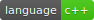

Qt Material Design Desktop Widgets  
YouTube video preview available here.
| App Bar |
QtMaterialAppBar
|

|
|
| Auto Complete |
QtMaterialAutoComplete
|

|
|
| Avatar |
QtMaterialAvatar
|
|
|
|
| Badge |
QtMaterialBadge
|
|
|
|
| Check Box |
QtMaterialCheckBox
|

|
|
| Circular Progress |
QtMaterialCircularProgress
|

|
|
| Dialog |
QtMaterialDialog
|

|
|
| Drawer |
QtMaterialDrawer
|

|
|
| FAB |
QtMaterialFloatingActionButton
|

|
|
| Flat Button |
QtMaterialFlatButton
|

|
|
| Icon Button |
QtMaterialIconButton
|

|
|
| Progress |
QtMaterialProgress
|

|
|
| Radio Button |
QtMaterialRadioButton
|

|
|
| Raised Button |
QtMaterialRaisedButton
|

|
|
| Scroll Bar |
QtMaterialScrollBar
|

|
|
| Slider |
QtMaterialSlider
|

|
|
| Snackbar |
QtMaterialSnackBar
|

|
|
| Tabs |
QtMaterialTabs
|

|
|
| Text Field |
QtMaterialTextField
|

|
|
| Toggle |
QtMaterialToggle
|

|
|
Implemented components
- App Bar
- Auto Complete
- Avatar
- Badge
- Check Box
- Circular Progress
- Dialog
- Drawer
- Floating Action Button
- Flat Button
- Icon Button
- Progress
- Radio Button
- Raised Button
- Scroll Bar
- Slider
- Snackbar
- Tabs
- Text Field
- Toggle
Work in progress
- Divider
- List
- List Item
- Menu
- Paper
- Snackbar Layout
- Table
Not implemented
- Card
- Chips
- Discrete Slider
- Grid List
- Icon Menu
- Search Field
- Select Field
- Stepper
- Subheaders
- Toolbar